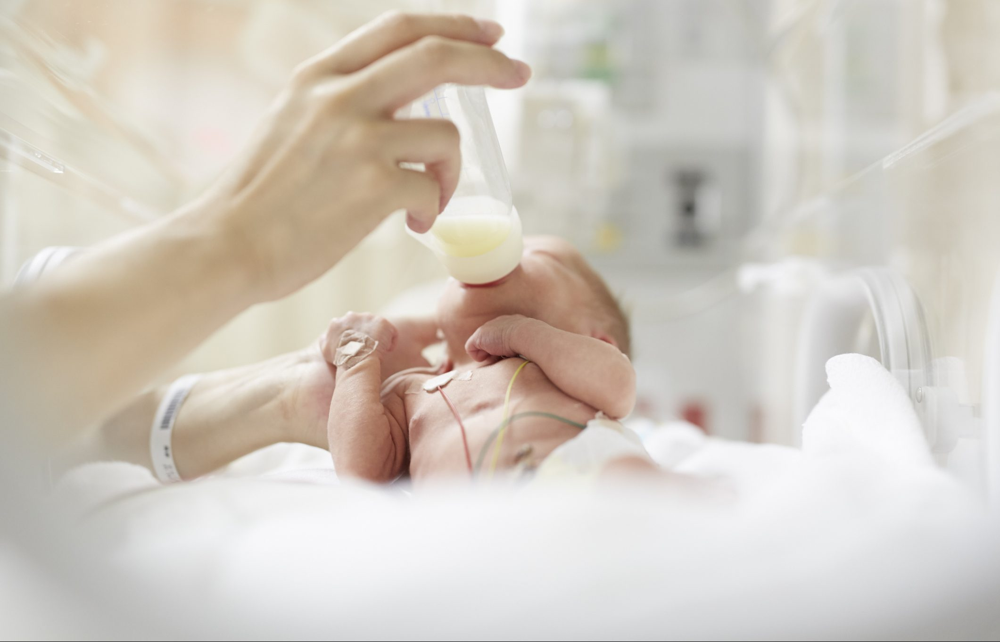
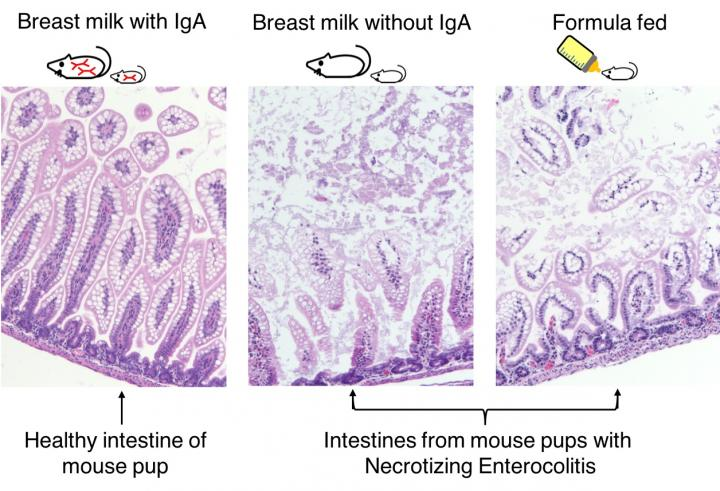
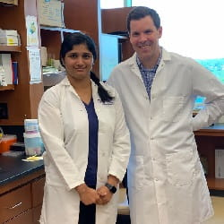
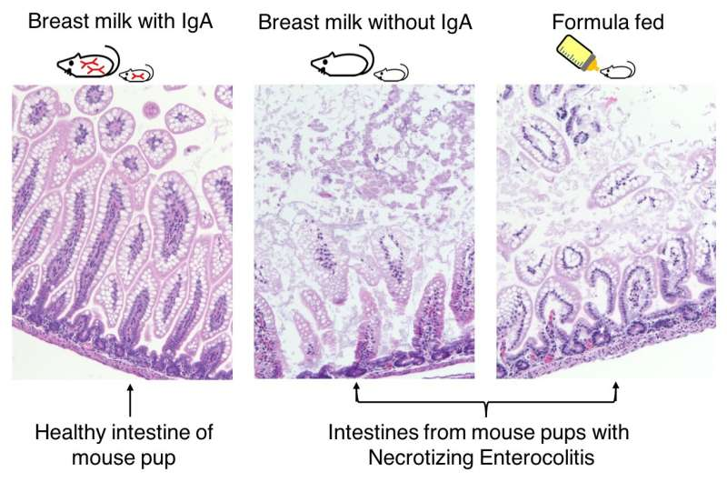
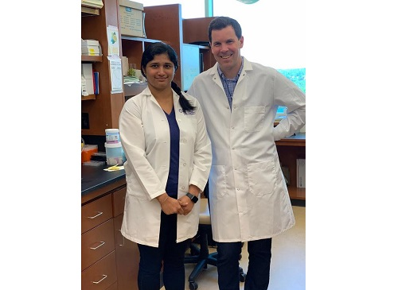
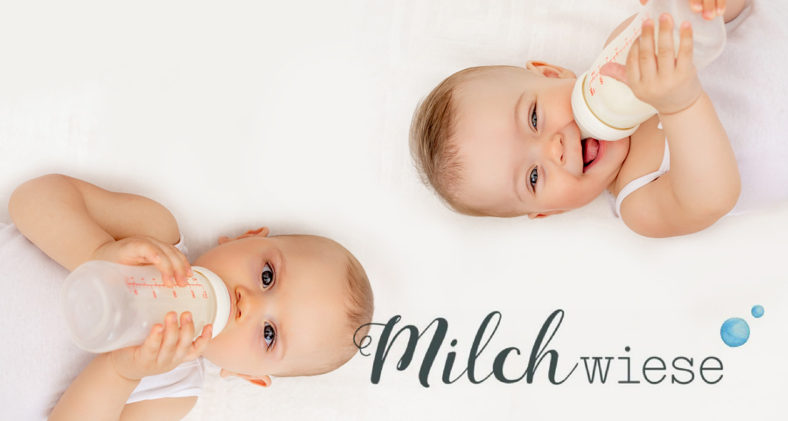
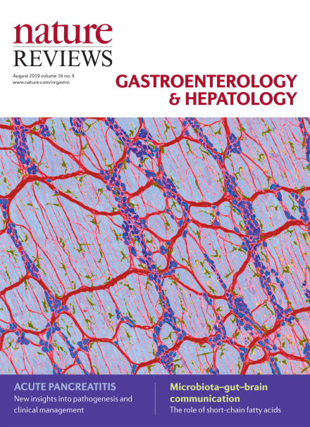
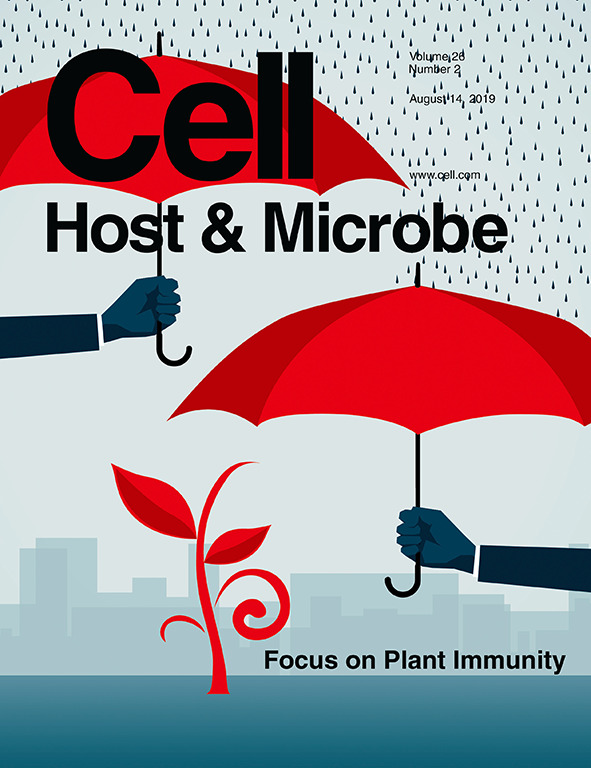

Media Coverage
United States

Another Reason Breast Is Best for Fragile Preemie Babies
U.S. News & World Report
View article
Breast Milk Can Protect Preterm Infants from Dangerous Gut Bacteria
Healthline
View article

Breastmilk’s IgA Protects Preemies From Deadly Disease
Genetic Engineering & Biotechnology News
View article

Breastmilk antibody protects preterm infants from deadly intestinal disease
EurekAlert!
View article
Otro motivo de que la leche materna sea lo mejor para los frágiles bebés prematuros
Vive Michigan
View article

Breastmilk Antibody Protects Infants from Deadly Disease
UPMC News
View article
Breastmilk Unique Antibodies and Necrotizing Enterocolitis
PittMed
View article

Breastmilk Antibody Protects Preterm Infants from Deadly Intestinal Disease
MedicalXpress
View article
United Kingdom
Switzerland
Italy
Spain
Germany

Antikörper in Muttermilch schützen Frühgeborene vor tödlicher Darmerkrankung
Biermann-Medizin
View article

Muttermilch für Frühchen | Ein Kracher!
Milchwiese
View article
IgA-Antikörper in der Muttermilch schützen Frühgeborene vor nekrotisierender Enterokolitis
Aerzteblatt
View article
Brazil
Indonesia
ASI Melindungi Bayi Prematur dari Bakteri Usus Berbahaya
KlikDokter
View article


